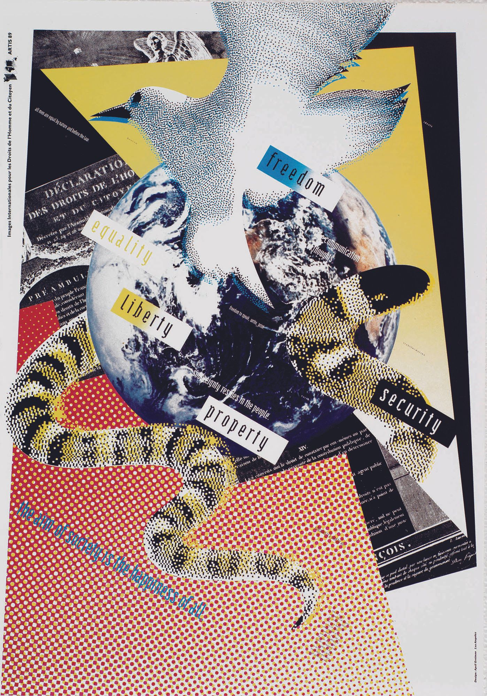
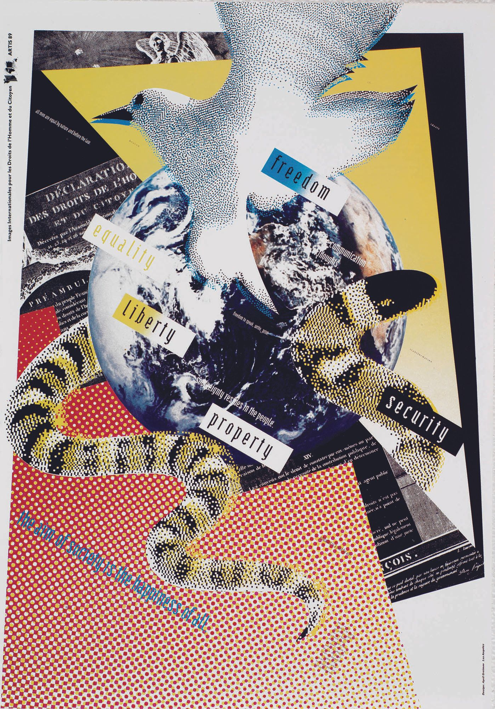
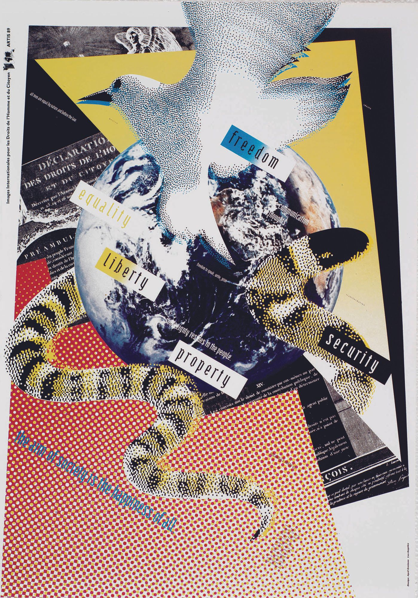

Women in Design

Blending Swiss modernism with bold experimentation, Greiman helped pioneer the use of digital technology in visual communication. She transformed the computer into a creative tool and inspired generations to see design as a space for exploration and change.
April Greiman was born in 1948 in New York City, a time when graphic design was dominated by modernist ideals — order, structure, and Swiss rationalism. Yet even early in her life, Greiman showed an instinct to push against constraints. She studied graphic design at the Kansas City Art Institute, where she encountered the formal discipline of the Bauhaus and Swiss design traditions. After graduating, she travelled to Basel, Switzerland, to study at the Allgemeine Kunstgewerbeschule (Basel School of Design) under the influential teachers Wolfgang Weingart and Armin Hofmann.
At Basel, Greiman absorbed the core tenets of Swiss modernism — grid systems, typography, and visual hierarchy — but she was equally captivated by Weingart’s more experimental, expressive approach. Weingart encouraged his students to question the limits of design conventions, explore texture, and embrace irregularity. This blend of rigour and rebellion became the foundation of Greiman’s philosophy.
Returning to the United States in the early 1970s, she brought with her a distinctly European sensibility, yet she immediately began to reinterpret it through a distinctly American lens. She established her own studio, Made in Space, in Los Angeles in 1976 — a fitting name for a designer fascinated by spatial relationships, digital technology, and new media. Her early work blended modernist clarity with eclectic imagery and dynamic composition, signalling a shift in the visual language of American design.
Greiman’s early career coincided with a period of significant cultural and technological change. The design world was on the cusp of the digital revolution, but many designers still viewed computers with scepticism, considering them a threat to craft and intuition. Greiman saw potential instead — not just for efficiency, but for expression. This curiosity set her apart and would soon define her as one of the first designers to fully embrace digital tools as creative instruments rather than mechanical aids.
⸻
By the 1980s, April Greiman had become one of the most recognised figures in postmodern graphic design, often credited with bringing the principles of New Wave typography to the United States. Her work defied the rigid grids of modernism, replacing them with layered compositions, fragmented type, and overlapping images. She treated the page — whether print or digital — as a spatial field rather than a static surface.
One of her most celebrated works from this era is her 1986 issue of Design Quarterly for the Walker Art Center, titled Does It Make Sense?. Instead of producing a conventional magazine, Greiman folded a single poster measuring nearly three feet by six feet, covered in a digital self-portrait and an array of floating images, textures, and typographic elements. It was a bold declaration that the computer could be a medium for art and communication — not just production. The piece became a landmark in digital design history, challenging both the aesthetic expectations and the cultural assumptions of what “computer design” could be.
Throughout the 1980s and 1990s, Greiman continued to explore the intersection between technology, communication, and perception. Her studio, Made in Space, produced work for clients in the fields of culture, architecture, and technology, including the Pacific Design Center, the Los Angeles Institute of Contemporary Art, and various corporate clients seeking forward-looking visual identities.
Greiman’s designs often incorporated digital photography, pixel-based imagery, and three-dimensional layering — all novel at the time. She rejected the idea that digital imperfections, such as jagged edges or image compression, should be hidden. Instead, she treated them as part of the texture of the digital medium, using them deliberately as expressive tools. This attitude marked a turning point in the acceptance of digital aesthetics within professional design.
She was also instrumental in shaping design education during this time. As chair of the design programme at California Institute of the Arts (CalArts), Greiman encouraged students to experiment with digital tools, new media, and interactivity long before they became industry standards. She was among the first educators to treat the computer as a legitimate artistic partner — a stance that profoundly influenced how design was taught in subsequent decades.
Greiman’s influence extended far beyond her own studio. She appeared on magazine covers, spoke at international conferences, and became a central figure in the debate over the role of technology in creativity. While many designers of her generation clung to the purity of analogue processes, Greiman positioned herself at the frontier of change. She saw technology not as replacing the designer’s hand, but as expanding its reach. As she once observed:
“Living with uncertainty is essential to being a designer. You can’t innovate if you already know exactly what the outcome will be. Technology simply makes that state of not-knowing more visible — you’re constantly exploring, testing, failing, and discovering. That’s where design lives.” — April Greiman
⸻
Beyond her commercial and educational achievements, April Greiman’s personal work reveals her broader preoccupation with space, perception, and the blending of the physical and digital. Her installations, environmental graphics, and experimental projects reflect her belief that design is not confined to flat surfaces, but exists in the interaction between image, object, and viewer.
She has produced large-scale murals, typographic installations, and architectural collaborations that extend her digital sensibility into three dimensions. A striking example is her work for the Wilshire Vermont Station in Los Angeles, where she integrated bold colour fields, geometric forms, and text fragments into the built environment, turning everyday space into a dynamic visual experience.
In her later work, Greiman has embraced hybrid practices that merge design, art, and technology. She experiments with augmented reality, motion graphics, and video — continuing to explore how new tools can reshape visual communication. Her approach is never about novelty for its own sake; rather, she uses technology to probe questions of meaning, perception, and cultural change.
Even after decades in the industry, Greiman maintains an exploratory mindset. She has described herself as a “transmedia designer”, a term that captures her refusal to be constrained by medium or category. Her philosophy is rooted in curiosity and the belief that creativity is a process of continual discovery. This attitude has made her a role model for generations of designers navigating the shifting boundaries between digital and physical design.
Greiman’s legacy lies not just in her aesthetic innovations, but in her redefinition of what it means to be a designer in the digital age. She helped move design from a discipline of control and precision to one of exploration and possibility. Her work invites designers to embrace complexity, uncertainty, and imperfection as integral to the creative process.
In doing so, she transformed not only the visual language of design but its cultural significance. Greiman’s career stands as a testament to openness, experimentation, and the courage to see technology not as a constraint, but as a canvas for imagination.